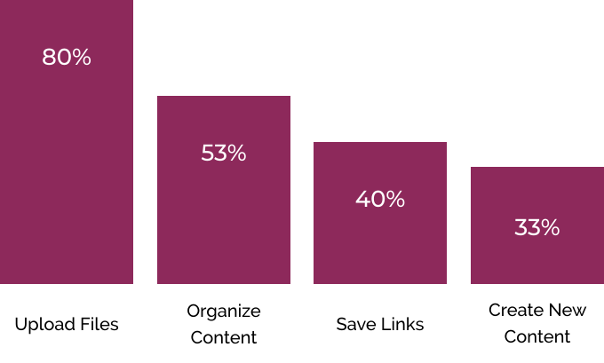
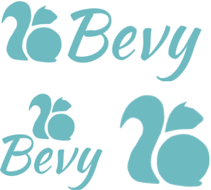
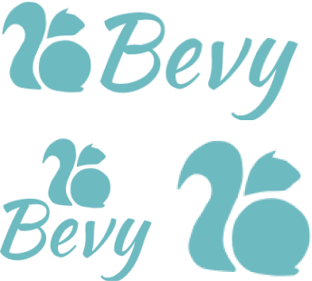

Problem
Users are increasingly turning to cloud storage as a means of storing and organizing content. However, they often store content in multiple locacation making it difficult to access. Users need an application that allows them to store and organize their documents, notes, and images in one easy to use application which they can access from any device.
Solution
Bevy-a cloud storage application that combines the functionality of Google Drive with the aesthetic appeal of Pinterest. User research guided every aspect of Bevy’s creation from the features included in the app, down to the button design. Bevy allows users to save, share, organize, and create content while employing a design that feels fresh and personal. This is a cloud storage platform users will enjoy using.

Google Drive
Shutterfly
Competitive Analysis
To better understand the cloud storage market, I conducted a competitive analysis of Google Drive, Pinterest, and Shutterfly.
Key takeaways
- The ability to share content with others is crucial to users.
- Users need to be able to organize content so it is easy to locate in future.
- Ease of use is of paramount importance. There are a number of cloud storage options, and if users have a trouble navigating one application they will simply switch to another.
User Research
A user survey was distributed to determine who uses cloud storage platforms and what users want out of cloud storage.
Participants who use cloud storage platforms.
Cloud storage users who use collaborative tools.
Cloud storage users who use Google Dive.
Participants who use cloud storage for personal use. 40% used cloud storage for work and 26.7% for school.
Most used cloud storage features
User Personas
.png)
Megan | Busy Working Parent
Goals
- Share links with coworkers
- Access from anywhere
- Save inspiration for later
Frustrations
- Not enough free storage
- Lacks features of desktop applications
.png)
Adam | Tech-Savvy Millennial
Goals
- Upload files from multiple devices
- Easily organize files
- Share files
Frustrations
- Poor mobile versions
- Privacy concerns
User Stories
User stories were developed to determine what tasks users would perform on the platform, and tasks were assigned high, medium, or low priority. Some high priority tasks included signing up for an account, signing in to an account, adding items, and organizing items into groups.
View User StoriesUser Flows
User flows were created accounting for all the high priority user stories as well as a number of medium and low priority user stories. The user flows give a visual representation of the users’ journey through the platform and make it easier to see holes as well as ensure smooth transitions from one area to the next. User flows were created for onboarding, adding items, existing item options, and account settings.
View User FlowsWireframes
With the user flows as a guide, I created wireframes in Figma for the onboarding, adding items, existing item option, and account settings processes.


Prototype and User Testing
From the wireframes, I created a prototype with InVision. In person and remote usability tests were conducted to determine where the design needed adjusting.

Testers were able to navigate the onboarding process easily.

When asked to add a new photo, some testers were confused by the Move to Folder button. I decided future iterations needed additional screens in this process to improve the flow and eliminate confusion.

Moving an item into a folder proved a challenge for testers. In the initial design, icons would appear when a user hovered over a card. Users did not realize this and searched the dashboard looking for a Move button. To solve for this problem, I made the icons a static feature in later iterations.
Branding
Logo
While working on the logo, I came up with a wide variety of sketches. My favorite sketches substituted squirrels for the B in Bevy the application name. I expanded on the squirrel logos in Figma and decided to use the squirrel as a mark in front of the name for legibility reasons. I wanted a brand typeface with a handwritten feel and chose Kaushan Script.

 

Style Guide
To give the brand cohesion, I created a comprehensive style guide. View Style Guide
Color Palette


High Fidelity Mockups
Implementing the branding work and the feedback I received from the wireframe user testing, I created high fidelity mockups in Figma for mobile and desktop. I tried to solve for the issues that arose in the first round of user testing by placing icons permanently at the bottom of cards and adding additional screens to the Add New processes.


Preference Tests
Preference tests were conducted to determine users’ preferences for button style, folder style and background. More than simple aesthetic preference, I believe these items had a real impact on the usability of the site.


High Fidelity Prototype and User Testing
Based on the results of the preference tests, I updated the high fidelity mockups and created a high fidelity clickable prototype in InVision.


I added additional screens to the add new tasks which added fluidity to the flow and users had no problems with this task.


I permanently displayed the available icons at the bottom of each card, no need to hover. Users recognized the move to folder icon and were able to complete this task.


Iterations
A user who tested the mobile site suggested the dashboard have two columns of cards rather than one column. I created a two column design in Figma and did an additional preference test. Participants preferred the two column design, so I changed the mobile mockups and prototype to reflect this change.

What I Learned
During the course of this project, I learned about the importance of user research and testing in guiding your design decisions. Information I gained from the initial user survey aided me through the entire project. Assumptions I made were contradicted by user research and testing, and I realized I would have made wrong turns without this vital information. Change is inevitable in the design process, and it needs to be embraced if you are going to create a successful product.
Contact Me